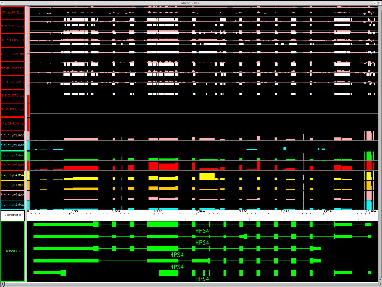

GenoViz
Tools for Genomic Data Visualization and Data Sharing
The GenoViz project includes several components:
- GenoViz SDK (software development kit) is a
library of re-usable components for genomics data visualization.
- Genometry is a unified data model to represent relationships
between biological sequences. It is mainly used in the Integrated Genome Browser.
- The Integrated Genome Browser (IGB, pronounced "ig-bee") is a desktop
application that uses both the GenoViz SDK and Genometry. It supports visualization and
exploration of genes, genomes, and genome-scale data sets, especially data from genome tiling arrays.
IGB can display data from multiple data sources, including DAS (Distributed Annotation System) servers and
local files on your file system.
- The GenoViz DAS/2 server allows distribution of genomic data using the DAS/2 protocol. (DAS/2 efficiently shares massive genomic datasets derived from next generation sequencing and high density microarray experiments using both binary and text data formats.)
- GenoPub is a rich-client Flex web database application (and extension of the DAS/2 server) for organizing and annotating data hosted by the DAS/2 server. GenoPub implements a user-group security model enabling the controlled distribution of public and private datasets.
Click for further details.
- ProtAnnot is used to visualize alternative splicing and its
effects on proteins. Click here for more details.
To view or obtain the GenoViz source code, visit the GenoViz project page hosted at
 .
.
Please report bugs
and feature requests
using the request tracker provided
on the GenoViz project pages.
IGB Resources
- Download
Visit igb.bioviz.org to obtain a copy of the Integrated Genome Browser. This site also hosts additional documentation, links to news items and updates, and is the most up-to-date source of information about IGB.
Affymetrix also hosts an IGB download page for use with Affymetrix array products.
- Documentation
BioViz hosts an IGB Wiki that contains updated information from the manual and GenoViz wiki.
Release notes (HTML) for version 4.0 and up.
Older resources:
|

Several additional screenshots illustrate
more capabilities of IGB.
|
Feedback
This software is provided as is, with the hope that it will be useful.
Please read the
terms and conditions.